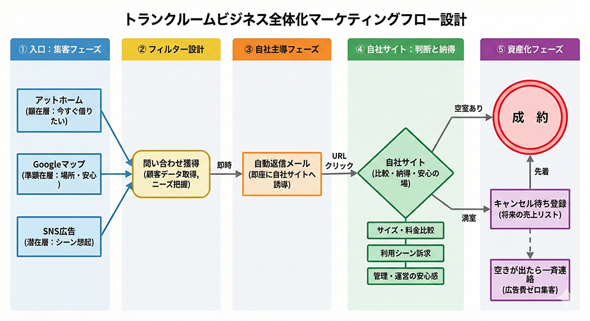

集客 → 問い合わせ獲得 → 自社管理下に移行 → 成約／キャンセル待ち資産化

入口は3系統に分類。
| 項目 | 内容 |
|---|---|
| ターゲット | 顕在層（今すぐ借りたい） |
| 特徴 | 検索意図が強い |
| 役割 | 存在認知 → 安心感 → 問い合わせ |
| ゴール | 問い合わせボタンを押してもらう |
| 項目 | 内容 |
|---|---|
| ターゲット | 準顕在層（近くで探している） |
| 特徴 | 倉庫用途が明確でない人も含む |
| 役割 | 場所と安心感の提示（写真・口コミ） |
| ゴール | 電話 or 問い合わせ |
| 項目 | 内容 |
|---|---|
| ターゲット | 潜在層（今すぐ借りるつもりはない） |
| 役割 | トランクルームという選択肢の認知、利用シーンの想起 |
| ゴール | 問い合わせ |
訴求する利用シーン例：
広告運用方針：
すべての入口のゴールは「問い合わせをしてもらう」こと
問い合わせ ≠ 成約
問い合わせは以下の入口として捉える：
問い合わせが入った瞬間に、マーケティングの主戦場は自社に移る。
ここでアットホーム依存を切る
自社サイトは「集客サイト」ではなく「判断と納得の場」
| 役割 | 内容 | 詳細 |
|---|---|---|
| 比較できる | サイズ比較表、料金一覧、用途別おすすめ | 問い合わせ後、最短で比較表に行ける導線 |
| ニーズに刺す | 利用シーンを丁寧に提示 | 自宅が狭い、片付けが終わらない、法人の一時保管、短期利用 →自分ごと化 |
| 安心させる | 運営者、管理状況、契約単位、解約のしやすさ | 価格より安心を優先 |
更新が止まると意味がなくなる → 更新のしやすさを最優先
チャットで指示 → ホームページが更新される
| 段階 | 内容 | 詳細 |
|---|---|---|
| 第1段階 | 手動構築 | HTML/CSSでサイトを構築、空き状況・写真・テキストを手動更新 |
| 第2段階 | AIによるコード変更 | AIがコードを直接編集し、更新作業を自動化 |
| 第3段階 | チャット連携 | チャットでAIに変更依頼 → コード変更 → 本番反映 |
※後からでも十分追いつける
リストを活用して売上を作る
広告費ゼロで即成約できる状態を作る
┌─────────────────────────────────────┐
│ 【集客】 │
│ アットホーム / Googleマップ / SNS広告 │
└─────────────────────────────────────┘
↓
┌─────────────────────────────────────┐
│ 【問い合わせ獲得】 │
└─────────────────────────────────────┘
↓
┌─────────────────────────────────────┐
│ 【自動返信・自社サイト誘導】 │
└─────────────────────────────────────┘
↓
┌─────────────────────────────────────┐
│ 【比較・納得・安心】 │
└─────────────────────────────────────┘
↓
┌─────────────────────────────────────┐
│ 【成約 or キャンセル待ち登録】 │
└─────────────────────────────────────┘
| No. | 業務内容 | 目的 |
|---|---|---|
| 1 | 掲載画像のブラッシュアップ | 問い合わせボタンを押してもらう |
| 2 | 問い合わせメリットの訴求文作成 | 「問い合わせすれば多数紹介できる」「キャンセル待ち対応可」などを伝える |
| No. | 業務内容 | 目的 |
|---|---|---|
| 3 | 写真の充実 | 安心感を与える |
| 4 | 口コミの充実 | 安心感を与える |
| 5 | ホームページへの誘導強化 | アクセス数を増やす |
| No. | 業務内容 | 目的 |
|---|---|---|
| 6 | 広告画像の作成 | 訴求力のあるクリエイティブ準備 |
| 7 | 複数パターンのテスト実施 | 反応の高いシナリオを見つける |
| 8 | 効果的なシナリオを本番ホームページに反映 | 集客効率の最大化 |
| No. | 業務内容 | 目的 |
|---|---|---|
| 9 | 自動返信メールの仕組み化 | 問い合わせ対応の自動化 |
| 10 | 自動返信メール内容の充実 | 自社サイト誘導・キャンセル待ち案内の強化 |
| No. | 業務内容 | 目的 |
|---|---|---|
| 11 | 自社サイトの構築（第1段階） | 判断と納得の場を作る |
| 12 | AIによるコード変更のレクチャー（第2段階） | 更新作業の効率化 |
| 13 | チャットAI連携プログラムの作成（第3段階） | チャット指示でサイト更新を実現 |
| No. | 業務内容 | 目的 |
|---|---|---|
| 14 | キャンセル待ち対象者への一斉メール送信の仕組み化 | 広告費ゼロで即成約できる状態を作る |